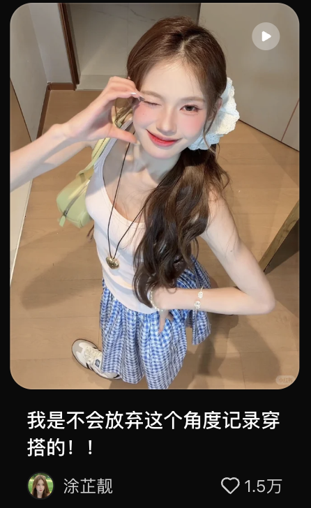
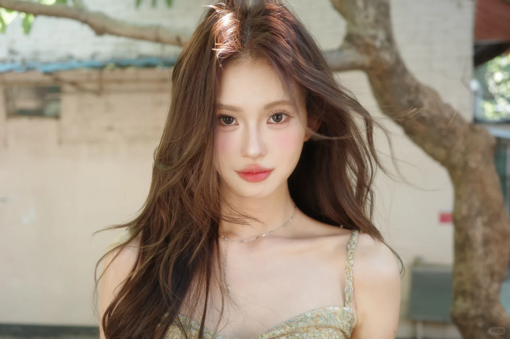

01 / PROFILE✶
Profile
是亮亮
会化妆、会搭配，
愿意分享方法的变美同伴。
以美妆内容为主要辨识度，通过穿搭与日常账号延伸个人形象。主号也包含生活与好物，账号内容并非完全隔离。
- 肤色 / 肤质
- 黄二白 · 混油皮
- 地区标签
- 广东广州
- MCN 标注
- 拾佳文化
- 账号身份
- 女性创作者
基础资料来自飞书记录与主页截图；地区标签不等于现居地。
CREATOR RESEARCH JOURNAL

美妆 · 穿搭 · 日常
IP 研究手册
RESEARCH SNAPSHOT / 2026.10.12

会化妆、会搭配，
愿意分享方法的变美同伴。
以美妆内容为主要辨识度，通过穿搭与日常账号延伸个人形象。主号也包含生活与好物，账号内容并非完全隔离。
基础资料来自飞书记录与主页截图；地区标签不等于现居地。
“同一个人，
不同内容场景。”
美妆让观众看到变美的方法
穿搭让观众看到她的审美选择
日常让观众更多了解这个人
上述为账号角色分析，跨号导流效果尚无数据。
以上沿用飞书记录；身高、体重原文未注明单位。
政府公开企业名单中存在该公司；文档未提供可确认她签约法律主体的合同信息。
来源：飞书“基础信息”；生日由用户补充，28岁按2026年10月12日计算。团队人数未提供；地区标签不等同于现居地。
199.4万粉丝
美妆教程、发型、好物与日常 vlog
查看账号 ↗125.1万粉丝
美妆与好物种草，延续主 IP
查看主页截图 ↗11.9万粉丝
服饰与搭配，呈现整体造型审美
查看账号 ↗8,879粉丝
日常生活，补充人物形象
查看账号 ↗粉丝量为飞书报告资料快照，非实时数据。小号关联依据用户补充；各平台粉丝可能重合，不加总为独立受众。
抖音主号的五个成长节点 · 点击查看阶段进展
这一阶段增加 70 万粉丝；按截图计时，在第 531 天达到百万节点。
“第 N 天”沿用原截图口径。注册日期未注明；里程碑不能说明爆款、投流或内容转型的具体贡献。
眼镜党淡妆、新手大牌彩妆、泰式水光妆，以人群或场景限定需求。
20 分钟无剪辑妆教，与短视频、旅行拆箱、收纳内容共同构成主号。
从美妆延伸到穿搭、好物和生活，形成“变美与审美生活”的内容线索。
年龄以 18—23、24—30 岁为主
统计区间：2026.09.04—10.09
更适合用来观察日常表现
均值由少数高播放视频拉动。对标时，应同时观察中位数、内容规律与峰值作品。
月连接用户 638.7 万。连接用户属于触达口径，不能当作粉丝或购买用户。
15条视频覆盖2026年9月4日至10月9日；商业视频指标使用近30天、只看指派且排除营销流量的另一口径。不能混作同一样本，也不能套用于两个小号。
报价来自资料记录，未核实当前价或成交价。直播统计周期未知；销售额不等于个人收入。
先定义“这个人为什么值得关注”，再安排美妆、穿搭和生活内容。各号主题可以不同，人物表达要可识别。
围绕人群、场景或想达到的效果组织内容；对标时记录标题承诺与最终展示是否一致。
重点学习选题和人物表达的规律，不用峰值播放量预测自己或一次商单的效果。
让结论有来源，让未知保持未知。
1998年7月30日出生，28岁（截至2026年10月12日，生日由用户补充）；身高163、体重90。已在个人资料页展开；原文未注明身高、体重单位。
主页资料有广东广州标签；截图 IP 属地为西班牙。两者都不能证明现居地。MCN 标注为拾佳文化，政府名单中存在广州拾佳文化传播有限公司，但不能据此确认签约法律主体。
网页基于 2026 年 10 月 12 日读取的飞书内容，粉丝数与数据均为资料快照。账号关联及生日由用户补充；团队人数、成交价、个人收入及跨号导流率尚无可靠结论。